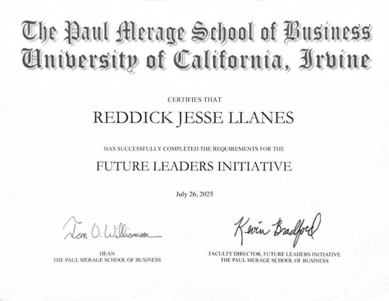
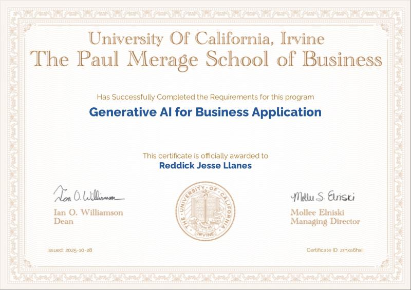
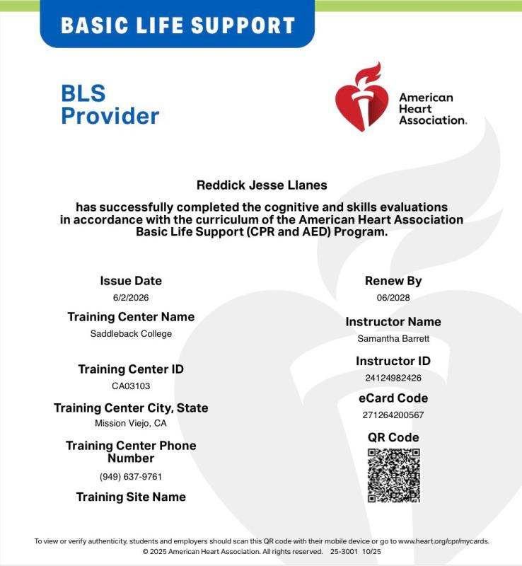

Business Administration · UC Riverside
Operations, Administration & Business Development
Supply chain and operations professional with experience across cGMP-regulated and fast-paced environments. Founder of TradeByBar—an algorithmic trading platform.
About Me
I'm a supply chain and operations professional with hands-on experience across regulated and fast-paced professional environments. At Avid Bioservices, I manage daily receiving operations — processing 15+ purchase orders and 50–150 packages per day, recording inventory in Microsoft Dynamics 365, and training floor workers on SOPs to keep every receiving activity cGMP compliant.
Previously at DaVita Healthcare, I coordinated treatment schedules across 20+ hospitals, working with medical teams on treatment assignments and managing dialysis equipment logistics to support uninterrupted operations.
Academically, I graduated Cum Laude from Irvine Valley College with an A.S. in Business Administration and am continuing at UC Riverside for a B.S. in Business Administration with concentrations in Finance and Operations & Supply Chain Management. I was also selected for UCI's Future Leaders Initiative at the Paul Merage School of Business.
Outside of work and school, I founded TradeByBar — an algorithmic trading platform built for prop firm traders alongside two partners.
Resume
Founder
TradeByBar · tradebybar.com
Supply Chain Specialist
Avid Bioservices · Tustin, CA
Administrative Assistant
DaVita Healthcare · Irvine, CA
Future Leaders Initiative — Cohort Member
UCI Paul Merage School of Business
Selected as one of the few community college students in Southern California to participate in UCI's Future Leaders Initiative. Received structured leadership development training in communication, team dynamics, personal branding, and strategic thinking. Explored business pathways in marketing, HR, finance, analytics, and program management.
A.S. Business Administration — Cum Laude
Irvine Valley College · Irvine, CA
Graduated with Cum Laude distinction; Honors Program member (Fall 2025); Dean's List (Fall 2024). Honors coursework: Principles of Microeconomics, Statistics for Business and Economics, Research and Writing, Principles of Macroeconomics, Communication Fundamentals, and Sociology.
B.S. Business Administration
University of California, Riverside · Riverside, CA
Concentrations in Finance and Operations & Supply Chain Management.
Projects
Software · Algorithmic Trading
TradeByBar — Auto Trading & Prop-Firm-Safe Automation
A software vendor — not a trading advisor — that lets traders define their own strategies and risk. The engine backtests those strategies and runs them on a live-data paper account around the clock, on a server that never sleeps, so an edge can be proven before any money is on the line. Live broker execution is on the way; when it arrives, copy-trading will work only between accounts the user owns. TradeByBar never accepts credentials to trade on anyone else's behalf, keeping it clear of CTA/NFA registration and users inside their prop firm's terms of service.
tradebybar.com →cGMP · Supply Chain
cGMP Receiving Operations at Avid Bioservices
Managing daily receiving operations — processing 15+ purchase orders and 50–150 packages per day, recording inventory in Microsoft Dynamics 365, and training floor workers on SOPs to keep every receiving activity cGMP compliant.
Healthcare Administration
Multi-Hospital Coordination at DaVita
Coordinated treatment schedules across 20+ hospitals — working with medical teams on treatment assignments and managing dialysis equipment logistics to support uninterrupted operations.
Certification · AI
Generative AI for Business Applications
Completed UCI Paul Merage School of Business certification in Generative AI — applying AI tools to enhance decision-making, operational efficiency, and business strategy.
Certifications

Future Leaders Initiative — Certificate of Completion
UCI Paul Merage School of Business · 2025

Generative AI for Business Application
UCI Paul Merage School of Business

BLS Provider
American Heart Association · Valid through June 2028
Contact
Open to opportunities, collaborations, and conversations. Reach out directly.
imrjllanes@gmail.com